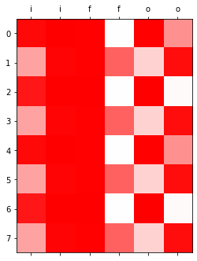

import torch
import matplotlib.pyplot as plt12wk-1: 순환신경망 (6)
순환신경망
LSTM (2)– LSTM의 계산과정, LSTM은 왜 강한가?
강의영상
https://youtube.com/playlist?list=PLQqh36zP38-yn6ykMCJiA-fWkITNhGO7r
import
Define some funtions
def f(txt,mapping):
return [mapping[key] for key in txt]
sig = torch.nn.Sigmoid()
soft = torch.nn.Softmax(dim=1)
tanh = torch.nn.Tanh()LSTM의 계산과정
data: abaB
txt = list('abaB')*100
txt[:5]['a', 'b', 'a', 'B', 'a']txt_x = txt[:-1]
txt_y = txt[1:]mapping = {'a':0, 'b':1, 'B':2}
x = torch.nn.functional.one_hot(torch.tensor(f(txt_x,mapping))).float()
y = torch.nn.functional.one_hot(torch.tensor(f(txt_y,mapping))).float()1 epoch ver1 (with torch.nn.LSTMCell)
torch.manual_seed(43052)
lstm_cell = torch.nn.LSTMCell(3,2)
linr = torch.nn.Linear(2,3)
loss_fn = torch.nn.CrossEntropyLoss()
optimizr = torch.optim.Adam(list(lstm_cell.parameters())+list(linr.parameters()),lr=0.1)T = len(x)
for epoc in range(1):
ht = torch.zeros(1,2)
ct = torch.zeros(1,2)
loss = 0
## 1~2
for t in range(T):
xt,yt = x[[t]], y[[t]]
ht,ct = lstm_cell(xt,(ht,ct))
ot = linr(ht)
loss = loss + loss_fn(ot,yt)
loss = loss / T
## 3
loss.backward()
## 4
optimizr.step()
optimizr.zero_grad()ht,ct (tensor([[-0.0406, 0.2505]], grad_fn=<MulBackward0>),
tensor([[-0.0975, 0.7134]], grad_fn=<AddBackward0>))1 epoch ver2 (완전 손으로 구현)
t=0 \(\to\) t=1
- lstm_cell 을 이용한 계산 (결과비교용)
torch.manual_seed(43052)
lstm_cell = torch.nn.LSTMCell(3,2)
linr = torch.nn.Linear(2,3)
loss_fn = torch.nn.CrossEntropyLoss()
optimizr = torch.optim.Adam(list(lstm_cell.parameters())+list(linr.parameters()),lr=0.1)T = len(x)
for epoc in range(1):
ht = torch.zeros(1,2)
ct = torch.zeros(1,2)
loss = 0
## 1~2
for t in range(1):
xt,yt = x[[t]], y[[t]]
ht,ct = lstm_cell(xt,(ht,ct))
# ot = linr(ht)
# loss = loss + loss_fn(ot,yt)
# loss = loss / T
# ## 3
# loss.backward()
# ## 4
# optimizr.step()
# optimizr.zero_grad()ht,ct (tensor([[-0.0541, 0.0892]], grad_fn=<MulBackward0>),
tensor([[-0.1347, 0.2339]], grad_fn=<AddBackward0>))- 이런결과를 어떻게 만드는걸까?
- https://pytorch.org/docs/stable/generated/torch.nn.LSTM.html
- 직접계산
ht = torch.zeros(1,2)
ct = torch.zeros(1,2)_ifgo = xt @ lstm_cell.weight_ih.T + ht @ lstm_cell.weight_hh.T + lstm_cell.bias_ih + lstm_cell.bias_hhinput_gate = sig(_ifgo[:,0:2])
forget_gate = sig(_ifgo[:,2:4])
gt = tanh(_ifgo[:,4:6])
output_gate = sig(_ifgo[:,6:8])ct = forget_gate * ct + input_gate * gt
ht = output_gate * tanh(ct)ht,ct(tensor([[-0.0541, 0.0892]], grad_fn=<MulBackward0>),
tensor([[-0.1347, 0.2339]], grad_fn=<AddBackward0>))t=0 \(\to\) t=T
torch.manual_seed(43052)
lstm_cell = torch.nn.LSTMCell(3,2)
linr = torch.nn.Linear(2,3)
loss_fn = torch.nn.CrossEntropyLoss()
optimizr = torch.optim.Adam(list(lstm_cell.parameters())+list(linr.parameters()),lr=0.1)T = len(x)
for epoc in range(1):
ht = torch.zeros(1,2)
ct = torch.zeros(1,2)
loss = 0
## 1~2
for t in range(T):
xt,yt = x[[t]], y[[t]]
## lstm_cell step1: calculate _ifgo
_ifgo = xt @ lstm_cell.weight_ih.T + ht @ lstm_cell.weight_hh.T + lstm_cell.bias_ih + lstm_cell.bias_hh
## lstm_cell step2: decompose _ifgo
input_gate = sig(_ifgo[:,0:2])
forget_gate = sig(_ifgo[:,2:4])
gt = tanh(_ifgo[:,4:6])
output_gate = sig(_ifgo[:,6:8])
## lstm_cell step3: calculate ht,ct
ct = forget_gate * ct + input_gate * gt
ht = output_gate * tanh(ct)
# ot = linr(ht)
# loss = loss + loss_fn(ot,yt)
# loss = loss / T
# ## 3
# loss.backward()
# ## 4
# optimizr.step()
# optimizr.zero_grad()ht,ct(tensor([[-0.0406, 0.2505]], grad_fn=<MulBackward0>),
tensor([[-0.0975, 0.7134]], grad_fn=<AddBackward0>))1 epoch ver3 (with torch.nn.LSTM)
torch.manual_seed(43052)
lstm_cell = torch.nn.LSTMCell(3,2)
linr = torch.nn.Linear(2,3) lstm = torch.nn.LSTM(3,2) lstm.weight_hh_l0.data = lstm_cell.weight_hh.data
lstm.bias_hh_l0.data = lstm_cell.bias_hh.data
lstm.weight_ih_l0.data = lstm_cell.weight_ih.data
lstm.bias_ih_l0.data = lstm_cell.bias_ih.data loss_fn = torch.nn.CrossEntropyLoss()
optimizr = torch.optim.Adam(list(lstm.parameters()) + list(linr.parameters()), lr=0.1) _water = torch.zeros(1,2)
for epoc in range(1):
## step1
hidden, (ht,ct) = lstm(x,(_water,_water))
output = linr(hidden)
# ## step2
# loss = loss_fn(output,y)
# ## step3
# loss.backward()
# ## step4
# optimizr.step()
# optimizr.zero_grad() ht,ct(tensor([[-0.0406, 0.2505]], grad_fn=<SqueezeBackward1>),
tensor([[-0.0975, 0.7134]], grad_fn=<SqueezeBackward1>))LSTM은 왜 강한가?
data: abaB
txt = list('abaB')*100
txt[:5]['a', 'b', 'a', 'B', 'a']n_words = 3mapping = {'a':0, 'b':1, 'B':2}txt_x = txt[:-1]
txt_y = txt[1:]txt_x[:10],txt_y[:10](['a', 'b', 'a', 'B', 'a', 'b', 'a', 'B', 'a', 'b'],
['b', 'a', 'B', 'a', 'b', 'a', 'B', 'a', 'b', 'a'])x = torch.nn.functional.one_hot(torch.tensor(f(txt_x,mapping))).float()
y = torch.nn.functional.one_hot(torch.tensor(f(txt_y,mapping))).float()x,y(tensor([[1., 0., 0.],
[0., 1., 0.],
[1., 0., 0.],
...,
[1., 0., 0.],
[0., 1., 0.],
[1., 0., 0.]]),
tensor([[0., 1., 0.],
[1., 0., 0.],
[0., 0., 1.],
...,
[0., 1., 0.],
[1., 0., 0.],
[0., 0., 1.]]))1000 epoch
torch.manual_seed(43052)
lstm = torch.nn.LSTM(3,2)
linr = torch.nn.Linear(2,3) loss_fn = torch.nn.CrossEntropyLoss()
optimizr = torch.optim.Adam(list(lstm.parameters())+ list(linr.parameters()),lr=0.1)_water = torch.zeros(1,2)
for epoc in range(1000):
## step1
hidden, (ht,ct) = lstm(x,(_water,_water))
output = linr(hidden)
## step2
loss = loss_fn(output,y)
## step3
loss.backward()
## step4
optimizr.step()
optimizr.zero_grad() 시각화
T = len(x)
input_gate = torch.zeros(T,2)
forget_gate = torch.zeros(T,2)
output_gate = torch.zeros(T,2)
g = torch.zeros(T,2)
cell = torch.zeros(T,2)
h = torch.zeros(T,2) for t in range(T):
## 1: calculate _ifgo
_ifgo = x[[t]] @ lstm.weight_ih_l0.T + h[[t]] @ lstm.weight_hh_l0.T + lstm.bias_ih_l0 + lstm.bias_hh_l0
## 2: decompose _ifgo
input_gate[[t]] = sig(_ifgo[:,0:2])
forget_gate[[t]] = sig(_ifgo[:,2:4])
g[[t]] = tanh(_ifgo[:,4:6])
output_gate[[t]] = sig(_ifgo[:,6:8])
## 3: calculate ht,ct
cell[[t]] = forget_gate[[t]] * cell[[t]] + input_gate[[t]] * g[[t]]
h[[t]] = output_gate[[t]] * tanh(cell[[t]])combinded1 = torch.concat([input_gate,forget_gate,output_gate],axis=1)
combinded2 = torch.concat([g,cell,h,soft(output)],axis=1)plt.matshow(combinded1[-8:].data,cmap='bwr',vmin=-1,vmax=1);
plt.xticks(range(combinded1.shape[-1]),labels=['i']*2 + ['f']*2 + ['o']*2);
plt.matshow(combinded2[-8:].data,cmap='bwr',vmin=-1,vmax=1)
plt.xticks(range(combinded2.shape[-1]),labels=['g']*2 + ['c']*2 + ['h']*2 + ['yhat']*3);

- 상단그림은 게이트의 값들만 시각화, 하단그림은 게이트 이외의 값들을 시각화
시각화의 해석I
plt.matshow(combinded1[-8:].data,cmap='bwr',vmin=-1,vmax=1);
plt.xticks(range(combinded1.shape[-1]),labels=['i']*2 + ['f']*2 + ['o']*2);
- input_gate, forget_gate, output_gate는 모두 0~1 사이의 값을 가진다.
- 이 값들은 각각 모두 \({\boldsymbol g}_t, {\boldsymbol c}_{t-1}, \tanh({\boldsymbol c}_t)\)에 곱해진다. 따라서 input_gate, forget_gate, output_gate 는 gate의 역할로 비유가능하다. (1이면 통과, 0이면 차단)
- input_gate: \({\boldsymbol g}_t\)의 값을 얼만큼 통과시킬지 0~1사이의 숫자로 결정
- forget_gate: \({\boldsymbol c}_{t-1}\)의 값을 얼만큼 통과시킬지 0~1사이의 숫자로 결정
- output_gate: \(\tanh({\boldsymbol c}_t)\)의 값을 얼만큼 통과시킬지 0~1사이의 숫자로 결정
시각화의 해석II
plt.matshow(combinded2[-8:].data,cmap='bwr',vmin=-1,vmax=1)
plt.xticks(range(combinded2.shape[-1]),labels=['g']*2 + ['c']*2 + ['h']*2 + ['yhat']*3);
- 결국 \({\boldsymbol g}_t\to {\boldsymbol c}_t \to {\boldsymbol h}_t \to \hat{\boldsymbol y}\) 의 느낌이다. (\({\boldsymbol h}_t\)를 계산하기 위해서는 \({\boldsymbol c}_t\)가 필요했고 \({\boldsymbol c}_t\)를 계산하기 위해서는 \({\boldsymbol c}_{t-1}\)과 \({\boldsymbol g}_t\)가 필요했음)
- \({\boldsymbol h}_t= \tanh({\boldsymbol c}_t) \odot {\boldsymbol o}_t\)
- \({\boldsymbol c}_t ={\boldsymbol c}_{t-1} \odot {\boldsymbol f}_t + {\boldsymbol g}_{t} \odot {\boldsymbol i}_t\)
- \({\boldsymbol g}_t,{\boldsymbol c}_t,{\boldsymbol h}_t\) 모두 \({\boldsymbol x}_t\)의 정보를 숙성시켜 가지고 있는 느낌이 든다.
- \({\boldsymbol g}_t\) 특징: 보통 -1,1 중 하나의 값을 가지도록 학습되어 있다. (마치 RNN의 hidden node처럼!)
- \(\boldsymbol{g}_t = \tanh({\boldsymbol x}_t {\bf W}_{ig} + {\boldsymbol h}_{t-1} {\bf W}_{hg}+ {\boldsymbol b}_{ig}+{\boldsymbol b}_{hg})\)
- \({\boldsymbol c}_t\) 특징: \({\boldsymbol g}_t\)와 매우 비슷하지만 약간 다른값을 가진다. 그래서 \({\boldsymbol g}_t\)와는 달리 -1,1 이외의 값도 종종 등장.
print("first row: gt={}, ct={}".format(g[-8].data, cell[-8].data))
print("second row: gt={}, ct={}".format(g[-7].data, cell[-7].data))
#g[-7], cell[-7]first row: gt=tensor([ 0.9999, -0.9999]), ct=tensor([ 0.9647, -0.9984])
second row: gt=tensor([ 0.9970, -0.9554]), ct=tensor([ 0.3592, -0.9373])- \({\boldsymbol h}_t\) 특징: (1) \({\boldsymbol c}_t\)의 느낌이 있음 하지만 약간의 변형이 있음. (2) -1~1 사이에의 값을 훨씬 다양하게 가진다. (tanh때문)
print("first row: gt={}, ct={}, ht={}".format(g[-8].data, cell[-8].data,h[-8].data))
print("second row: gt={}, ct={}, ht={}".format(g[-7].data, cell[-7].data,h[-7].data))
#g[-7], cell[-7]first row: gt=tensor([ 0.9999, -0.9999]), ct=tensor([ 0.9647, -0.9984]), ht=tensor([ 0.7370, -0.3323])
second row: gt=tensor([ 0.9970, -0.9554]), ct=tensor([ 0.3592, -0.9373]), ht=tensor([ 0.0604, -0.6951])- 예전의문 해결
- 실험적으로 살펴보니 LSTM이 RNN보다 장기기억에 유리했음.
- 그 이유: RRN은 \({\boldsymbol h}_t\)의 값이 -1 혹은 1로 결정되는 경우가 많았음. 그러나 경우에 따라서는 \({\boldsymbol h}_t\)이 -1~1의 값을 가지는 것이 문맥적 뉘앙스를 포착하기에는 유리한데 LSTM이 이러한 방식으로 학습되는 경우가 많았음.
- 왜 LSTM의 \({\boldsymbol h}_t\)은 -1,1 이외의 값을 쉽게 가질 수 있는가? (1) gate들의 역할 (2) 마지막에 취해지는 tanh 때문
LSTM의 알고리즘 리뷰 I (수식위주)
(step1) calculate \({\tt ifgo}\)
\({\tt ifgo} = {\boldsymbol x}_t \big[{\bf W}_{ii} | {\bf W}_{if}| {\bf W}_{ig} |{\bf W}_{io}\big] + {\boldsymbol h}_{t-1} \big[ {\bf W}_{hi}|{\bf W}_{hf} |{\bf W}_{hg} | {\bf W}_{ho} \big] + bias\)
\(=\big[{\boldsymbol x}_t{\bf W}_{ii} + {\boldsymbol h}_{t-1}{\bf W}_{hi} ~\big|~ {\boldsymbol x}_t{\bf W}_{if}+ {\boldsymbol h}_{t-1}{\bf W}_{hf}~ \big|~ {\boldsymbol x}_t{\bf W}_{ig} + {\boldsymbol h}_{t-1}{\bf W}_{hg} ~\big|~ {\boldsymbol x}_t{\bf W}_{io} + {\boldsymbol h}_{t-1}{\bf W}_{ho} \big] + bias\)
참고: 위의 수식은 아래코드에 해당하는 부분
ifgo = xt @ lstm_cell.weight_ih.T +\
ht @ lstm_cell.weight_hh.T +\
lstm_cell.bias_ih + lstm_cell.bias_hh(step2) decompose \({\tt ifgo}\) and get \({\boldsymbol i}_t\), \({\boldsymbol f}_t\), \({\boldsymbol g}_t\), \({\boldsymbol o}_t\)
\({\boldsymbol i}_t = \sigma({\boldsymbol x}_t {\bf W}_{ii} + {\boldsymbol h}_{t-1} {\bf W}_{hi} +bias )\)
\({\boldsymbol f}_t = \sigma({\boldsymbol x}_t {\bf W}_{if} + {\boldsymbol h}_{t-1} {\bf W}_{hf} +bias )\)
\({\boldsymbol g}_t = \tanh({\boldsymbol x}_t {\bf W}_{ig} + {\boldsymbol h}_{t-1} {\bf W}_{hg} +bias )\)
\({\boldsymbol o}_t = \sigma({\boldsymbol x}_t {\bf W}_{io} + {\boldsymbol h}_{t-1} {\bf W}_{ho} +bias )\)
(step3) calculate \({\boldsymbol c}_t\) and \({\boldsymbol h}_t\)
\({\boldsymbol c}_t = {\boldsymbol i}_t \odot {\boldsymbol g}_t+ {\boldsymbol f}_t \odot {\boldsymbol c}_{t-1}\)
\({\boldsymbol h}_t = \tanh({\boldsymbol o}_t \odot {\boldsymbol c}_t)\)
LSTM의 알고리즘 리뷰 II (느낌위주)
- 이해 및 암기를 돕기위해서 비유적으로 설명한 챕터입니다..
- 느낌1: RNN이 콩물에서 간장을 한번에 숙성시키는 방법이라면 LSTM은 콩물에서 간장을 3차로 나누어 숙성하는 느낌이다.
- 콩물: \({\boldsymbol x}_t\)
- 1차숙성: \({\boldsymbol g}_t\)
- 2차숙성: \({\boldsymbol c}_t\)
- 3차숙성: \({\boldsymbol h}_t\)
- 느낌2: \({\boldsymbol g}_t\)에 대하여
- 계산방법: \({\boldsymbol x}_t\)와 \({\boldsymbol h}_{t-1}\)를 \({\bf W}_{ig}, {\bf W}_{hg}\)를 이용해 선형결합하고 \(\tanh\)를 취한 결과
- RNN에서 간장을 만들던 그 수식에서 \(h_t\)를 \(g_t\)로 바꾼것
- 크게 2가지의 의미를 가진다 (1) 과거와 현재의 결합 (2) 활성화함수 \(\tanh\)를 적용
- 느낌3: \({\boldsymbol c}_t\)에 대하여 (1)
- 계산방법: \({\boldsymbol g}_{t}\)와 \({\boldsymbol c}_{t-1}\)를 요소별로 선택하고 더하는 과정
- \(g_t\)는 (1) 과거와 현재의 결합 (2) 활성화함수 tanh를 적용으로 나누어지는데 이중에서 (1) 과거와 현재의 정보를 결합하는 과정만 해당한다. 차이점은 요소별 선택 후 덧셈
- 이러한 결합을 쓰는 이유? 게이트를 이용하여 과거와 현재의 정보를 제어 (일반적인 설명, 솔직히 내가 좋아하는 설명은 아님)
- 느낌4: \({\boldsymbol c}_t\)에 대하여 (2) // \({\boldsymbol c}_t\)는 왜 과거와 현재의 정보를 제어한다고 볼 수 있는가?
\(t=1\) 시점 계산과정관찰
input_gate[1],g[1],forget_gate[1],cell[0](tensor([0.9065, 0.9999], grad_fn=<SelectBackward0>),
tensor([0.9931, 0.9999], grad_fn=<SelectBackward0>),
tensor([0.9931, 0.0014], grad_fn=<SelectBackward0>),
tensor([ 0.3592, -0.9373], grad_fn=<SelectBackward0>))\([0.9,1.0] \odot {\boldsymbol g}_t + [1.0,0.0] \odot {\boldsymbol c}_{t-1}\)
- forget_gate는 \(c_{t-1}\)의 첫번째 원소는 기억하고, 두번째 원소는 잊으라고 말하고 있음 // forget_gate는 과거(\(c_{t-1}\))의 정보를 얼마나 잊을지 (= 얼마나 기억할지) 를 결정한다고 해석할 수 있다.
- input_gate는 \(g_{t}\)의 첫번째 원소와 두번째 원소를 모두 기억하되 두번째 원소를 좀 더 중요하게 기억하라고 말하고 있음 // input_gate는 현재(\(g_{t}\))의 정보를 얼만큼 강하게 반영할지 결정한다.
- 이 둘을 조합하면 \({\boldsymbol c}_t\)가 현재와 과거의 정보중 어떠한 정보를 더 중시하면서 기억할지 결정한다고 볼 수 있다.
이 설명은 제가 좀 싫어해요, 싫어하는 이유는 (1) “기억의 정도를 조절한다”와 “망각의 정도를 조절한다”는 사실 같은말임. 그래서 forget_gate의 용어가 모호함. (2) 기억과 망각을 조정하는 방식으로 꼭 gate의 개념을 사용해야 하는건 아님
- 느낌5: \({\boldsymbol c}_t\)에 대하여 (3)
- 사실상 LSTM 알고리즘의 꽃이라 할 수 있음.
- LSTM은 long short term memory의 약자임. 기존의 RNN은 장기기억을 활용함에 약점이 있는데 LSTM은 단기기억/장기기억 모두 잘 활용함.
- LSTM이 장기기억을 잘 활용하는 비법은 바로 \({\boldsymbol c}_t\)에 있다.
- 느낌6: \({\boldsymbol h}_t\)에 대하여 - 계산방법: \(\tanh({\boldsymbol c}_t)\)를 요소별로 선택
- RNN, LSTM의 변수들 비교 테이블
| 과거정보 | 현재정보 | 과거와 현재의 결합방식 | 활성화 | 느낌 | 비고 | |
|---|---|---|---|---|---|---|
| RNN-\({\boldsymbol h}_t\) | \({\boldsymbol h}_{t-1}\) | \({\boldsymbol x}_t\) | \(\times\) \(\to\) \(+\) | \(\tanh\) | 간장 | |
| LSTM-\({\boldsymbol g}_t\) | \({\boldsymbol h}_{t-1}\) | \({\boldsymbol x}_t\) | \(\times\) \(\to\) \(+\) | \(\tanh\) | 1차간장 | |
| LSTM-\({\boldsymbol c}_t\) | \({\boldsymbol c}_{t-1}\) | \({\boldsymbol g}_t\) | \(\odot\) \(\to\) \(+\) | None | 2차간장 | gate를 열림정도를 판단할때 \({\boldsymbol x}_t\)와 \({\boldsymbol h}_{t-1}\)을 이용 |
| LSTM-\({\boldsymbol h}_t\) | None | \({\boldsymbol c}_t\) | None | \(\tanh\), \(\odot\) | 3차간장 | gate를 열림정도를 판단할때 \({\boldsymbol x}_t\)와 \({\boldsymbol h}_{t-1}\)을 이용 |
- RNN은 기억할 과거정보가 \({\boldsymbol h}_{t-1}\) 하나이지만 LSTM은 \({\boldsymbol c}_{t-1}\), \({\boldsymbol h}_{t-1}\) 2개이다.
- 알고리즘리뷰 :
- 콩물,과거3차간장 \(\overset{\times,+,\tanh}{\longrightarrow}\) 현재1차간장
- 현재1차간장, 과거2차간장 \(\overset{\odot,+,\tanh}{\longrightarrow}\) 현재2차간장
- 현재2차간장 \(\overset{\tanh,\odot}{\longrightarrow}\) 현재3차간장
LSTM이 강한이유
- LSTM이 장기기억에 유리함. 그 이유는 input, forget, output gate 들이 과거기억을 위한 역할을 하기 때문.
- 비판: 아키텍처에 대한 이론적 근거는 없음. 장기기억을 위하여 꼭 LSTM같은 구조일 필요는 없음. (왜 3차간장을 만들때 tanh를 써야하는지? 게이트는 꼭3개이어야 하는지?)
- 저는 사실 아까 살펴본 아래의 이유로 이해하고 있습니다.
- 실험적으로 살펴보니 LSTM이 RNN보다 장기기억에 유리했음.
- 그 이유: RRN은 \({\boldsymbol h}_t\)의 값이 -1 혹은 1로 결정되는 경우가 많았음. 그러나 경우에 따라서는 \({\boldsymbol h}_t\)이 -1~1의 값을 가지는 것이 문맥적 뉘앙스를 포착하기에는 유리한데 LSTM이 이러한 방식으로 학습되는 경우가 많았음.
- 왜 LSTM의 \({\boldsymbol h}_t\)은 -1,1 이외의 값을 쉽게 가질 수 있는가? (1) gate들의 역할 (2) 마지막에 취해지는 tanh 때문